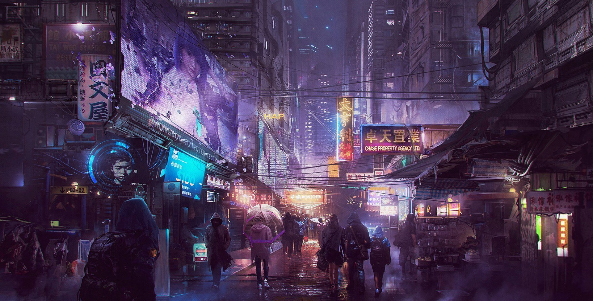
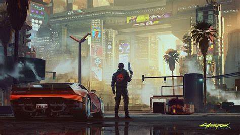

Cyberpunk 2077
Cyberpunk 2077 es un videojuego de rol y acción en mundo abierto desarrollado por CD Projekt Red.
Está ambientado en un futuro distópico, en el año 2077, en una megaciudad llamada Night City.
Trama principal
El jugador toma el control de V, un mercenario que puede personalizarse en cuanto a género, apariencia, habilidades y trasfondo.
La historia gira en torno a una misión fallida que lleva a V a tener implantado un chip con la conciencia de Johnny Silverhand.
El objetivo es separarse de Johnny sin morir en el proceso.
Características
- Mundo abierto: Explora libremente Night City.
- Estilo RPG: Decisiones que afectan la historia y el final.
- Combate y sigilo: Enfrenta desafíos a tu manera.
- Implantes: Mejora tus habilidades físicas y tecnológicas.
- Temas adultos: Identidad, moralidad y rebelión.